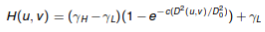
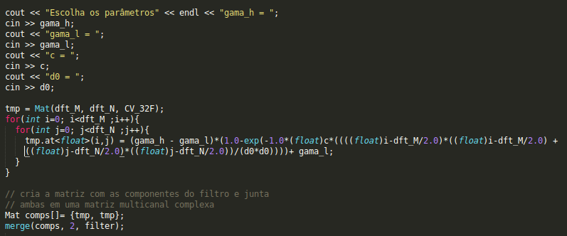
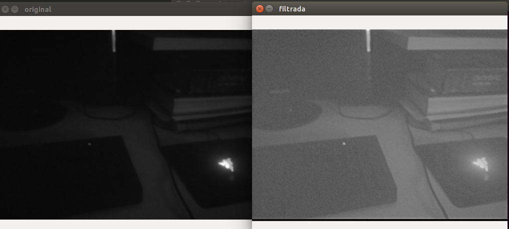
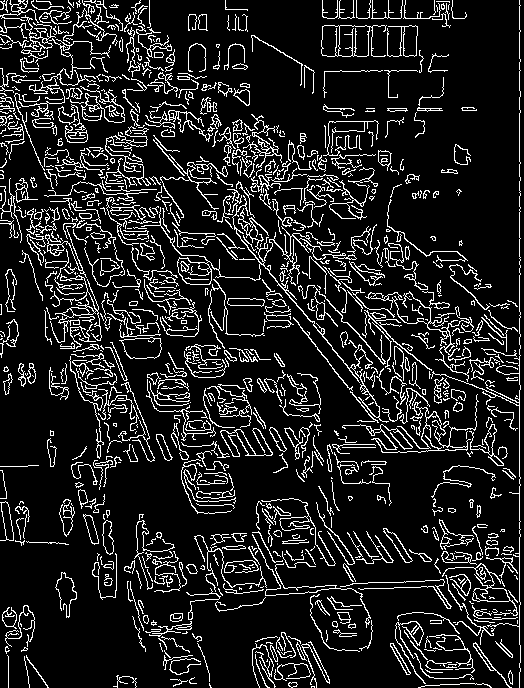
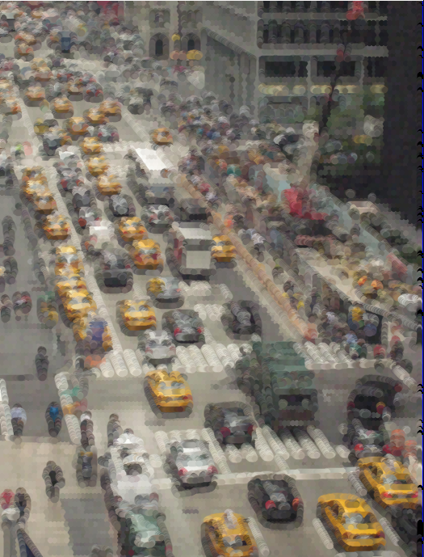

Exercício 8.2 - Filtro Homomórfico
Nesse exercícios resolveremos problemas de ilunação utilizando o filtro homomórfico
O filtro homomorfico será aplicado à imagem no domínio da frequência, portanto é necessário que a transformada de fourier seja aplicada na imagem. Para utilizar a transformada de fourier em uma imagem é preciso que ela assuma algumas características principalmente envolvendo o seu dimensionamento, esse ajustes podem ser verificados no código disponibilizado.
O filtro trabalha na reflectância e na iluminação da imagem separadamente através da expressão abaixo e suas constantes.

As constantes são ajustadas pelo usuário afim de atingir o resultado esperado.
Segue abaixo o trecho de código onde é feito o calculo do filtro:

Segue abaixo a imagem antes e depois do filtro:

Exercício 11.1 - Pontilhismo usando Canny
Nesse exercício tentei associar os dois conceitos ensinados. Utilizando os exemplos disponibilizados pelo professor, relacionei os dois algoritimos e alcancei uma imagem pontilhista mais "suave", tornando a imagem mais clara e fácil de ser compreendida.
Primeiramente adaptei o código do pontilhismo disponibilizado para trabalhar com imagens coloridas, criando um Vec3b para trabalhar com as 3 componentes de cor. Em seguida, apliquei o pontilhismo na imagem diminuindo o deslocamento aleatório (Jitter). Após isso, apliquei o filtro de Canny com um limiar de 100 de mínimo e 200 de máximo. Por fim, apliquei a tecnica do pontilhismo somente nas bordas
Limiar de bordas escolhido e onde será aplicado o pontilhismo novamente:

Pontilhismo sem Canny

Pontilhismo com Canny
